TCP
- È un protocollo di trasporto punto a punto
- crea una connessione diretta (1,1) tra mittente e destinatario
- I dati sono trasmessi come un unico flusso di byte sicuri, i byte devono arrivare correttamente e senza perdite
- Full duplex, ovvero connessione bidirezionale simultanea
- MSS è un dato che rappresenta la grandezza massima di dati di un singolo segmento
- escludiamo però l’intestazione
- Spesso gli ACK possono essere accumulati così posso confermare più segmenti con un singolo ACK
- concetto di pipelining visto anche in rdt che applica anche
- handshaking tra i due(viene stabilita una connessione sicura)
- controllo su cose come flusso e congestione adattando le varie velocità di trasmissione e ridurre così il traffico
Foto dettagliata di come funziona
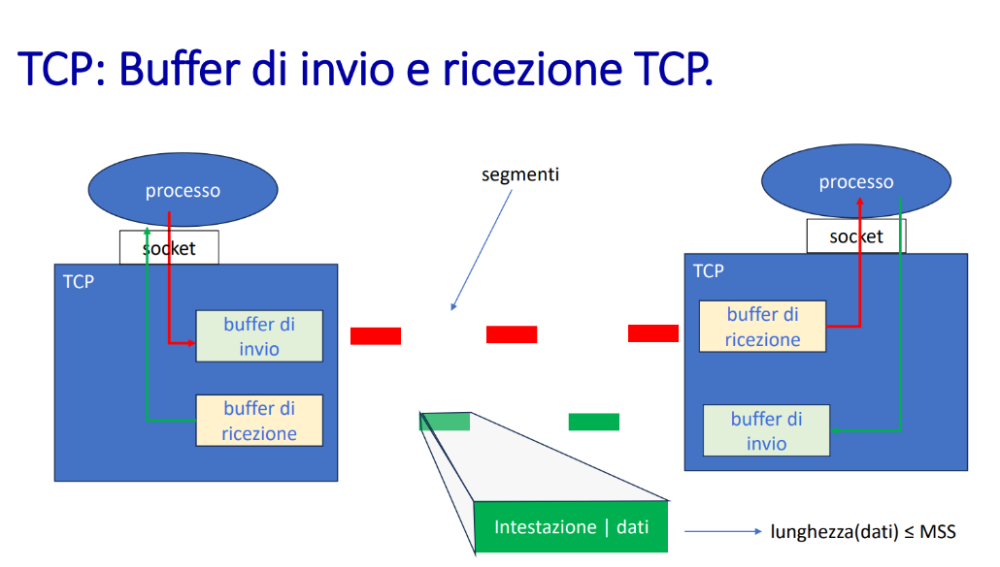
MSS cosa è
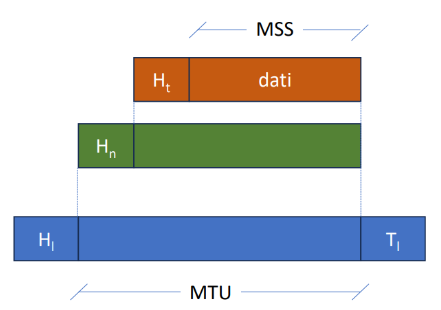 in questa immagine abbiamo un segmento TCP diviso in più strati
- il primo arancione è il segmento gestito dal TCP diviso tra +dati
- MSS è la lunghezza solo dei dati
- il secondo verde è quello del protocollo IP che contiene anche quello TCP
- poi il terzo blu è quello vero e proprio che è tutto l’insieme, i dati sono lunghi quanto una variabile MTU
- c’è anche un che indica un altra collezione di dati detto trailer per fare tipo controlli o cose varie Calcoli vari
- ovviamente MTU deve essere >= a MSS+Hₜ+Hₙ
esempio
MTU = 1500 byte
Hₙ = 20 B (IPv4),
Hₜ = 20 B (TCP)
⇒ MSS = 1460 byte fa la formula inversa per ricavare MSS
Quando due dispositivi fanno handshake TCP possono anche scambiarsi il valore MSS
- così sanno quanto possono scambiarsi
- per impostare un determinato valore MSS si scrive su un pacchetto TCP SYN scambiato tra i due
- Questo permette a entrambi di adattarsi al valore più sicuro e compatibile. Il valore MTU può variare lungo il percorso in base ai dispositivi che lo intercorrono
- usare Path MTU Discovery ci permette di scoprire automaticamente il min MTU
- evita frammenti o scarti di pacchetti Se si supera la MTU
- con ipv4 viene frammentato il pacchetto
- ipv6 li scarta e manda un errore al mittente
Segmento PDU del TCP
possiamo vedere in questa foto qua sotto come abbiamo una Protocol Data Unit del TCP
-
L’immagine rappresenta un vero e proprio segmento TCP, ovvero l’unità di dati del livello di trasporto, che contiene tutte le informazioni necessarie per la comunicazione tra mittente e destinatario — come porte, numeri di sequenza, ACK, flag, dati applicativi — e che viene effettivamente generato, trasmesso e memorizzato da entrambe le parti per garantire un trasferimento affidabile 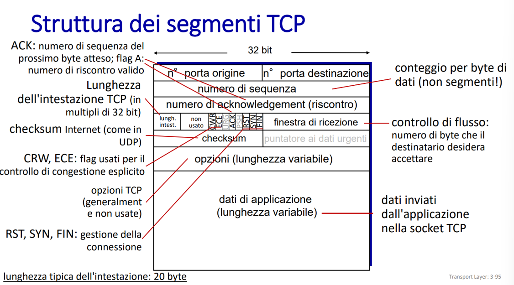 descriviamo tutte le cose in modo migliore: 🔹 1. Porta origine (16 bit)
-
Numero della porta TCP del mittente.
-
Serve per capire quale applicazione (es. browser, server web) ha generato i dati da inviare.
🔹 2. Porta destinazione (16 bit)
- Porta TCP del destinatario, che identifica l’applicazione che deve ricevere i dati.
- Es: porta 80 per HTTP, 443 per HTTPS.
🔹 3. Numero di sequenza (32 bit)
- Indica il numero del primo byte inviato in questo segmento.
- TCP lavora a livello di byte, non di pacchetti!
- Serve a ricostruire l’ordine corretto dei dati.
🔹 4. Numero di acknowledgment (32 bit)
- Campo valido solo se il flag ACK è attivo.
- Indica il numero del prossimo byte atteso, cioè: “Ho ricevuto tutto fino a questo punto”.
🔹 5. Lunghezza dell’intestazione (4 bit)
- Specifica quanto è lunga l’intestazione TCP, in multipli di 4 byte (32 bit).
- Serve per capire dove iniziano i dati dell’applicazione.
- La lunghezza tipica è 20 byte, se non ci sono opzioni.
🔹 6. Flag TCP (6 bit principali tra vari):
- URG: ci sono dati urgenti
- ACK: acknowledgment valido
- PSH: consegna immediata all’applicazione
- RST: resetta la connessione (es. errore)
- SYN: inizio connessione (handshake)
- FIN: fine della trasmissione 🧠 RST, SYN, FIN sono usati nella gestione della connessione.
🔹 7. Finestra di ricezione (16 bit)
- Usata per il controllo di flusso: indica quanti byte il destinatario è pronto a ricevere.
- Serve al mittente per non sovraccaricare il buffer del ricevente.
🔹 8. Checksum (16 bit)
- Calcolato su intestazione + dati.
- Verifica l’integrità dei dati (come in UDP).
- Se il valore non torna, il pacchetto viene considerato danneggiato e scartato.
🔹 9. Puntatore ai dati urgenti (16 bit)
- Usato solo se il flag URG è attivo.
- Indica dove finisce la parte urgente nei dati.
- Oggi è raramente usato.
🔹 10. Opzioni TCP (lunghezza variabile)
- Area facoltativa con estensioni utili come:
- MSS (Maximum Segment Size)
- Timestamp
- Window Scaling
- Nelle connessioni moderne, opzioni usate frequentemente per ottimizzare le prestazioni (soprattutto in reti ad alta latenza).
🔹 11. Dati dell’applicazione
- Sono i dati veri e propri generati dall’applicazione (es. contenuto HTML, file, email…).
- TCP li riceve dall’app tramite la socket TCP.
- La lunghezza è variabile, in base alla MSS e allo spazio disponibile.
Numeri di sequenza e ACK di TCP
- ogni byte ha un suo numero di sequenza che è sequenziale al primo byte
- se il primo byte ha numero 3000 il successivo avrà 3001 e così via
- serve per identificarli
- il campo ACK number è un campo che contiene il numero del prossimo byte che deve essere ancora confermato, se invio ACK 5000 significa che ho ricevuto tutto fino a 4999 e quindi attendo che il 5000 arrivi
- esiste quello selettivo che permette di non confermare in sequenza ma a pezzi
- non sappiamo definire esattamente cosa succede se i byte vengono inviati non in ordine
- dipende dalle implementazioni 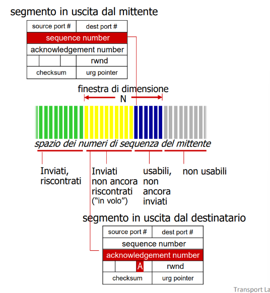 in questa foto possiamo vedere come anche qui abbiamo una gestione a finestre che permette di salvare i vari numeri Scambio tra due host evidenziando i vari Seq e ACK → 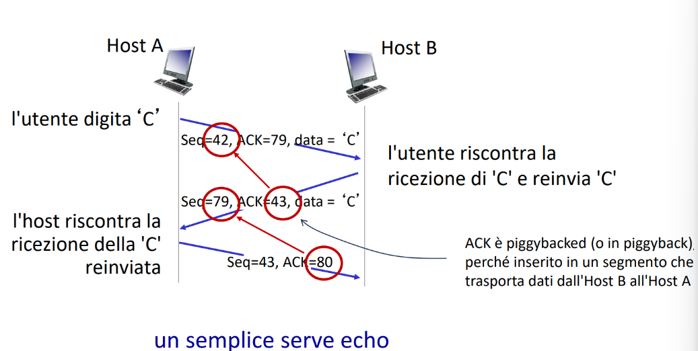
Round Trip Time RTT
- anche qui abbiamo un valore di timeout che una volta scaduto può ad esempio reinviare un determinato byte
- questo valore deve essere > di RTT
- il tempo trascorso tra invio del segmento e l’ACK
- il problema è che esso varia nel tempo
- se è troppo piccolo avrò ritrasmissioni non necessarie
- se è troppo grande aumento la latenza
Come stimarlo
- Sample RTT è il tempo che viene misurato della trasmissione di un segmento fino alla ricezione di un ACK, senza contare ritrasmissioni
- visto che varia abbiamo bisogno di fare una media livellata(pesata) tra più Sample RTT 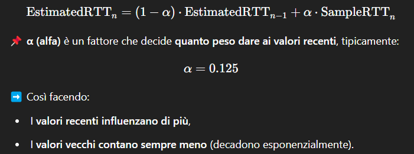 Tutto si può tradurre in una sommatoria dove: 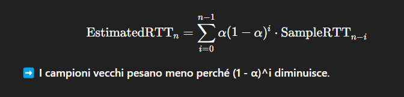 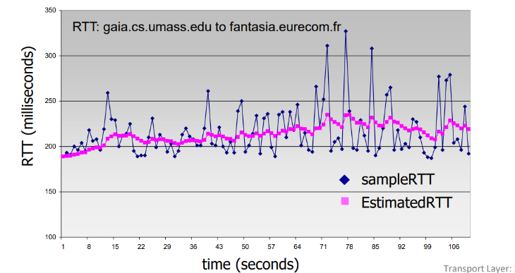
Calcolare il Timeout corretto
Il timeout serve per capire quando ritrasmettere un segmento se l’ACK non arriva in tempo. dove abbiamo:
-
- che è il tempo stimato di Trasmissione
-
- è un valore che ci dice quanto siamo vicini alla stima rispetto ai singoli calcolati di volta in volta
- È moltiplicato per 4 per dare un margine maggiore al singolo Per trovare andiamo ad applicare 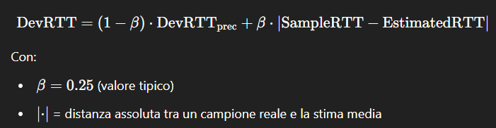
Eventi di un mittente TCP(semplificato)
- ricevi i dati dall’applicazione(livello superiore)
- crea un segmento con questi dati
- assegna un numero di sequenza dal primo byte
- inizia a inviare i segmenti e poi
- avvia il timer applicando un TimeoutInterval Se il timeout scade:
- timer scade e ACK non arrivato:
- ritrasmette il segmento di byte scaduto
- riavvia il timer
- durata del timeout raddoppiata
- timer scade e ACK arrivato:
- aggiorna il numero di sequenza dei byte inviati
- riavvia il timer per il prossimo segmento in attesa
Casi in cui un ricevente invia gli ACK
| Caso | Destinatario (ricevente TCP) | Mittente TCP |
|---|---|---|
| 1 | Riceve segmento ordinato e atteso. Tutti i dati precedenti già ricevuti. 🔹 Attende fino a 500 ms prima di inviare un ACK (ACK ritardato). | Attende ACK. Se non arriva entro il timeout, ritrasmette. Se arriva entro 500 ms, continua normalmente. (continua comunque a inviare le cose) |
| 2 | Riceve altro segmento ordinato mentre il primo è in attesa di ACK. 🔹 Invia ACK cumulativo immediato. | Riceve l’ACK. Conferma più dati, avanza la finestra e può inviare nuovi segmenti. |
| 3 | Riceve segmento fuori ordine (numero di sequenza superiore). 🔹 Invia ACK duplicato, ripetendo il numero del byte atteso. | Riceve ACK duplicato. Dopo 3 ACK duplicati, attiva la Fast Retransmit e ritrasmette il segmento mancante. |
| 4 | Riceve segmento che colma il buco (tutto o parte). 🔹 Se il segmento inizia esattamente nel punto mancante, invia ACK immediato. | Riceve ACK. Conferma nuovi dati e riprende la trasmissione in modo ordinato. |
Foto esempi
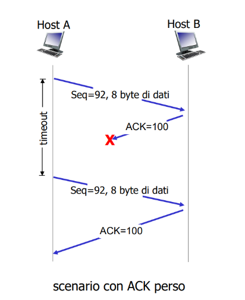 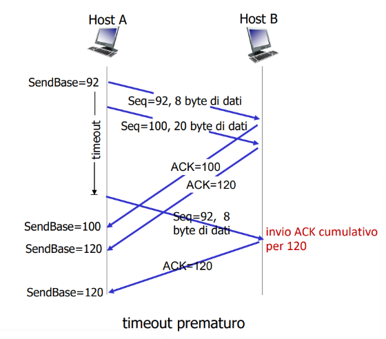 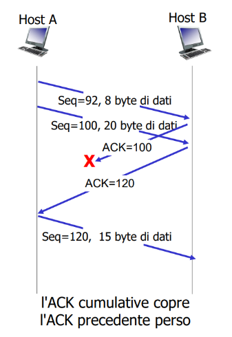 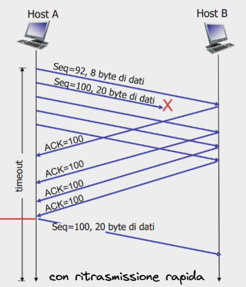
Al terzo ACK invia il segmento subito senza timeout vari
Approfondimento sui controlli
Il controllo di flusso
Esso serve quando il livello di rete fornisce dati più velocemente di quanti ne può assimilare il livello applicativo, riempiendo di conseguenza tutto il buffer
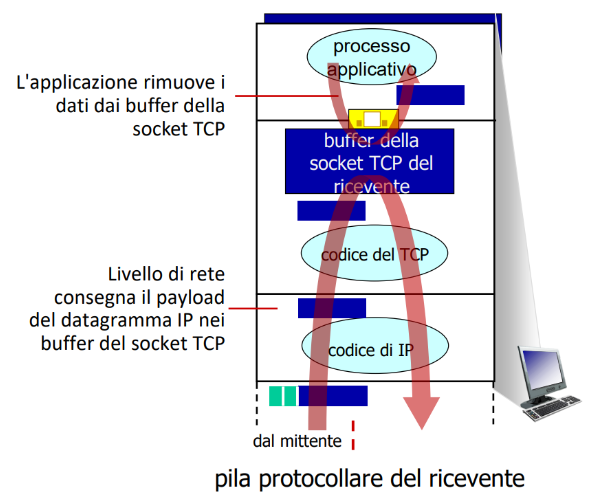 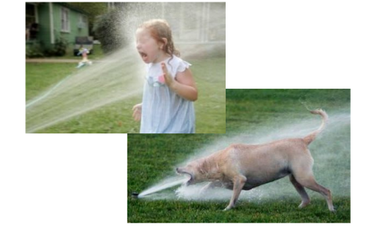 Il destinatario riesce a controllare il mittente per ridurre quante cose deve inviare andando a definire una receive window adatta 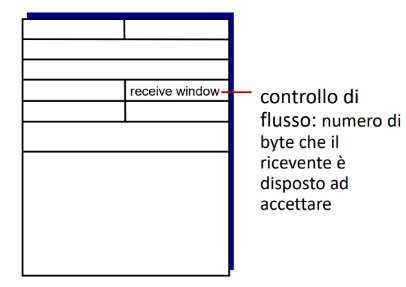
Approfondimento su rwnd
Fa parte dell’intestazione TCP e appunto serve a indicare quanti byte il destinatario può ancora ricevere esso viene calcolato da questa formula:
RcvBuffer= dimensione totale del buffer di ricezione (es. 4096 byte)LastByteRcvd= ultimo byte ricevutoLastByteRead= ultimo byte consegnato all’applicazione 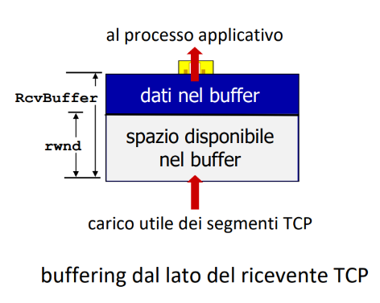 ovviamente abbiamo che i dati non riscontrati sono quei dati inviati ma che ancora non hanno un ACK di riscontro
Stabilire una connessione TCP con handshake
- prima di scambiare i dati entrambi
- accettano di stabilire una connessione
- concordano i vari parametri come anche il rcvbuffer 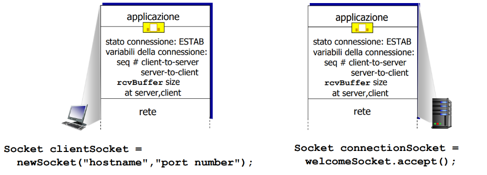
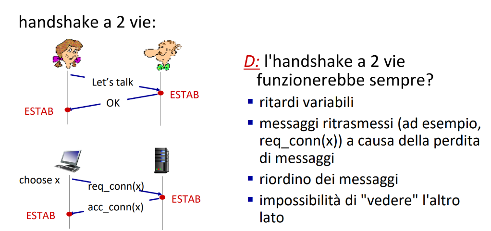
Scenari possibili con handshake a 2 vie
in questo caso abbiamo uno scambio perfetto di informazioni 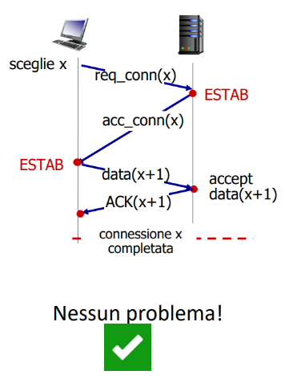 qui la la connessione viene stabilita ESTAB ma viene inviata una doppia richiesta al server perché non viene dato abbastanza tempo per accettarla 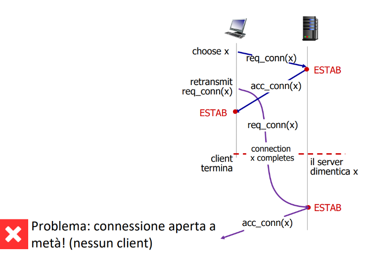 Qui per sbaglio il client invia una nuova richiesta di connessione poiché il server non fa in tempo ad inviare l’ACK 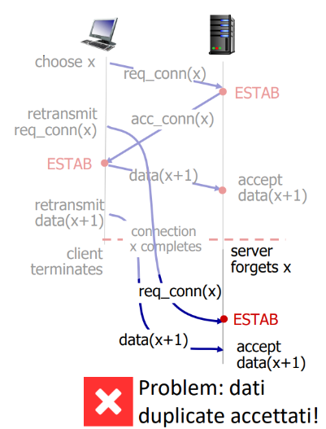
Esempio con 3 way handshake che risolve i problemi sopra
In questo caso abbiamo un handshake che avviene in 3 passaggi
- passaggio 1:
- viene inviata una sincronizzazione attraverso un Synbit e specificando un codice di sequenza del client
- il server risponde con lo stesso Synbit che identifica la sincronizzazione e un suo numero di sequenza, inoltre l’ACK viene gestito così
- ACKbit
- identifica se è da prendere in considerazione o meno 1 o 0
- ACKnum
- identifica a quale sequenza ci riferiamo
- ACKbit
- il client rimanda una conferma con ACKnum ovviamente mettendolo anche valido con ACKbit 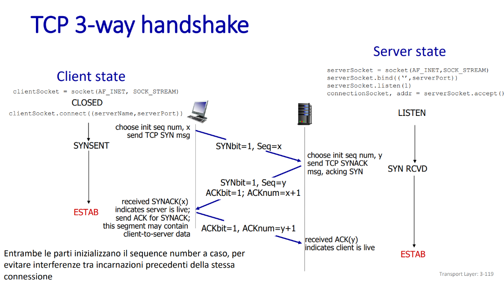
Bit di reset in questo tipo di connessione
Il bit di reset RST è un flag presente nell’intestazione
- serve per forzare la chiusura di una connessione
- usata tipo in errori critici
- se un host riceve una richiesta su una porta su cui nessuno è in ascolto
- invierà RST=1 a quel client
- Se una delle due parti riceve un pacchetto sbagliato
- invia RST=1
Un segmento RST:
- Rivela all’attaccante che la porta è accessibile, anche se nessun servizio è attivo
- Quindi:
- “La porta non è usata da un processo, ma non è nascosta da un firewall”
FSM
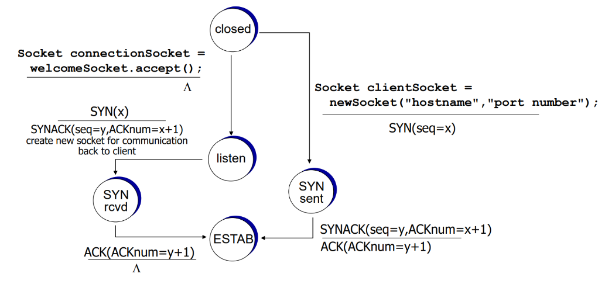
Attacco di tipo SYN FLOOD
- ha come obiettivo quello di saturare le risorse del server mandando tantissime richieste di connessione senza però terminare le 3 fasi dell’handshake
🔁 Fasi dell’attacco :
- 🧑💻 L’aggressore invia un gran numero di segmenti TCP SYN al server, ma con indirizzi IP fasulli (spoofati).
- 🖥 Il server risponde a ognuno con un SYN-ACK e alloca risorse per la connessione (buffer, variabili…).
- 📡 La rete prova a inoltrare i SYN-ACK agli IP falsi → che non rispondono con l’ACK
- ⏱ Il server rimane nello stato
SYN_RCVDper un po’ (anche 60+ secondi) in attesa dell’ACK → connessioni mezze aperte. - 💥 Ripetendo l’attacco su larga scala, il server esaurisce le risorse (memoria, connessioni, socket) → non riesce più a gestire nuove richieste legittime.
🧨 Questo è un classico esempio di DoS (Denial of Service), e se fatto in parallelo da più sorgenti diventa un DDoS.
Utilizzo di SYN Cookie per proteggere i server
- Vogliamo evitare che il server allochi risorse per richieste false
- Quando arriva il SYN
- il server non salva nessun dato della connessione
- calcola un cookie con le seguenti info
- quest’ultimo viene messo come numero di sequenza nel SYN-ACK
- non abbiamo ancora allocato nulla
- calcola un cookie con le seguenti info
- se il client è vero lui risponderà con un ACKnum che corrisponde al cookie 🔄 Può includere anche timestamp per evitare attacchi replay, ovvero ogni tot cambia la chiave che consente la generazione dei cookie
Chiudere una connessione TCP
Usano entrambi il segmento TCP con il flag FIN impostato a 1 ognuno di loro deve farlo e si può rispondere con un ACK combinato al FIN
- lo fa quando una delle due parti vuole sia confermare che l’altro ha chiuso ma anche che lui sta chiudendo quindi fa
ACK+FIN
- A manda:
FIN - B riceve e risponde con:
ACK + FIN - A riceve e risponde con:
ACK
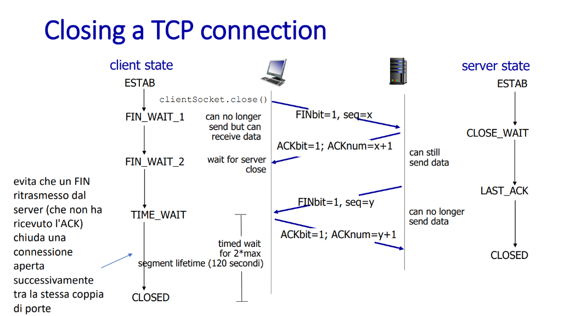 in questa foto non li manda insieme ma fa due cose a sè